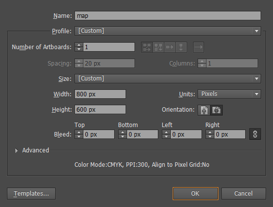
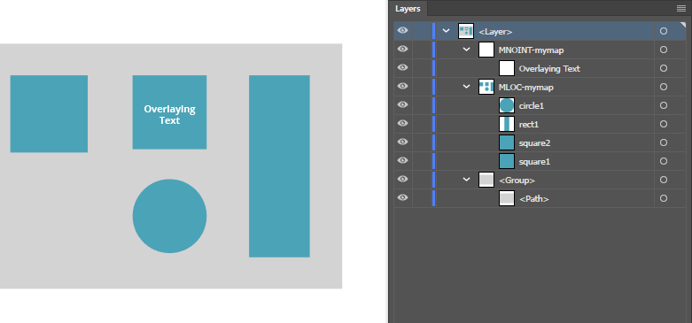

Getting Started
Files
After purchasing Mapplic - Custom Interactive Map jQuery Plugin, a compressed file can be downloaded from CodeCanyon, containing two folders:
docs - documentation, a detailed user guide with an SVG map tutorial on creating Mapplic compatible maps
html - plugin files with the required libraries, all the built-in and demo maps
Update
Mapplic comes with free, lifetime updates. Customers can always download the latest version from their CodeCanyon Downloads Page (must be logged in). We will send out notifications on every major update.
What's the .json file for?
Mapplic separetes map graphics from map data. Graphics are the actual image or vector files, while map data describes everything that's on the map: group, floor and location data.
JSONs are simple, human readable text files, editable with any txt editor, no programming skills required.
Setting up your first map
The easiest way to get started with the plugin is modifying one of the included demo .html and .json files. For example, if you need a United States map, try editing the attributes found in usa.json and see what happens if you refresh usa.html (through web server). The next step could be setting up a new location by duplicating an existing block and editing the attribute values.
In order to import Mapplic into an existing project, the following CSS and JavaScript files have to be included:
<!-- Stylesheets (head section) -->
<link rel="stylesheet" type="text/css" href="mapplic/mapplic.css">
<!-- Scripts (after closing body tag) -->
<script type="text/javascript" src="js/jquery.min.js"></script>
<script type="text/javascript" src="mapplic/mapplic.js"></script>To use the built-in Lightbox feature css/magnific-popup.css and js/magnific-popup.js are required as well. CSV support requires js/csvparser.js to work.
The plugin uses AJAX for loading map data, which is not allowed in some browsers for local files due to security reasons and you may get the following error message: "Data file missing or invalid". The solution is using a web server, it can be either a hosted web server environment or a local solution like XAMPP or MAMP.
Options
As any jQuery plugin, Mapplic has to be initialized at some point on your site. The function is .mapplic() and it takes an object of options as the first/only parameter.
/* Initializing the plugin on the div with id="mapplic" */
$('#mapplic').mapplic({
source: 'map-data.json',
height: 'auto',
minimap: false,
sidebar: true,
hovertip: true,
developer: false,
maxscale: 3
});Full list of options (default value)
source ('location.json') - path to data JSON file or inline JSON object (relative to the HTML file). Use inline JSON objects if the application is not running on web server (see canada.html for example).
csv (false) - path to data CSV file (relative to the HTML file), activates CSV Support.
height (420) - height of the component in pixels (px). It can also be defined in percent (%) of the browser window or set to auto (fixed height calculated by the plugin). The plugin will always take up the available horizontal space, so the width is equal to the parent's width.
customcss (null) - custom CSS styles for the map.
portrait (668) - the breakpoint for portrait mode (window width in pixels). Setting it false completely disables portrait mode while true forces it on any screen size.
landmark (null) - enables Landmark Mode: the map will be focused to the location with ID set as value when the page loads.
minimap (false) - enable/disable minimap. Paths to minimap image(s) are set in the .json file.
sidebar (true) - enable/disable sidebar, containing search field and the list of locations.
hidenofilter (false) - when true, sidebar location will be hidden by default and only shown when filter is active (search field or selected group).
search (true) - enable/disable search field. It only has meaning if the sidebar is enabled.
searchlength (1) - minimum length of the keyword to trigger search.
searchfields (['title', 'about']) - array of the searchable location attributes. This option can be used to enable search for additional fields like location 'description'.
searchdescription (false) - make the description searchable (overrides the above searchfields).
highlight (true) - highlight filtered map elements on search.
thumbholder (true) - enable/disable thumbnail placeholder. It only has meaning if the sidebar is enabled.
alphabetic (false) - alphabetically order sidebar elements by title.
lightbox (false) - enable/disable lightbox. The lightbox will only work if the magnific-popup js and css files are loaded.
deeplinking (true) - enable/disable deeplinking feature: each location has it's own URL.
hovertip (true) - enable/disable hover tooltip for locations.
fullscreen (false) - show/hide fullscreen button (top left corner of the map).
developer (false) - enable/disable developer mode: displaying coordinates of the cursor.
smartip (false) - enable/disable smart tooltip (always visible).
defaultstyle (null) - default style of interactive elements. Location and Group style attributes can override this.
marker ('default') - default marker type, locations' pin attribute can override this.
action ('tooltip') - default action to perform when a location is focused. Location's action attribute can override this. Currently supported action types are tooltip, open-link, open-link-new-tab, lightbox and none.
zoom (true) - enable/disable zoom feature.
clearbutton (true) - show/hide clear button (bottom left corner of the map).
zoombuttons (true) - show/hide zoom (+/-) buttons (bottom left corner of the map).
zoomoutclose (false) - automatically zoom all the way out when a location popup is closed.
closezoomout (true) - automatically close the tooltip when the map is zoomed all the way out.
mousewheel (true) - enable/disable mousewheel zoom.
linknewtab (false) - open links in new tab by default.
zoommargin (200) - map margin value in pixels when the map is zoomed in (not applied when zoomed all the way out). Set '0' to disable margin.
mapfill (false) - map fills the container if true, otherwise the map will fit into the container, as the default behavior.
maxscale (3) - float value indicating the maximum zoom level. For example, the maximum zoomed map size will be 1200x800 for a file of 600x400 dimensions and maxscale set to '2'.
basecolor (null) - base color of the UI
bgcolor (null) - background color of the UI
bgcolor2 (null) - secondary background color of the UI
headingcolor (null) - color of headings
textcolor (null) - color of regular text
accentcolor (null) - UI accent color
Data Structure
Mapplic has its own JSON data structure. It is simple text, you can use any text editor and no coding knowledge is required! The easiest way to get familiar with properties and attributes is by inspecting examples, if you need something that can be found in one of the previews, open the demo .json and see how it is done.
{
"mapwidth": "2000",
"mapheight": "2000",
"groups": [
{
"id": "furniture",
"title": "Furniture",
"color": "#4cd3b8"
}
],
"levels": [
{
"id": "lower",
"title": "Lower floor",
"map": "images/apartment/lower.jpg",
"minimap": "images/apartment/lower-small.jpg",
"locations": [
{
"id": "coffeetable",
"title": "Coffee Table",
"description": "This is an awesome coffee table.",
"category": "furniture",
"x": "0.2050",
"y": "0.4660",
"zoom": "3"
},
{
"id": "diningtable",
"title": "Dining Table",
"description": "Dining table for 8.",
"category": "furniture",
"link": "http://codecanyon.net/user/sekler?ref=sekler",
"x": "0.4746",
"y": "0.2883"
}
]
}
]
}The plugin will stop working if your JSON is invalid. A validator like this one comes handy in finding issues. Common mistakes are:
having a comma after the last element of an array ([{},])
not using quotation marks ("") for attribute keys and/or values
Attributes
Below you can find the full list of attributes. Attributes not marked as (optional) are required!
mapwidth (required) - width of the map file(s) in pixels.
mapheight (required) - height of the map file(s) in pixels.
bottomLat (optional) - map file's bottommost latitude
leftLng (optional) - map file's leftmost longitude
topLat (optional) - map file's topmost latitude
rightLng (optional) - map file's rightmost longitude
-
styles [] (optional) - list of reusable styles.
class (required) - unique class of the group. It's an actual CSS class so please respect the HTML class naming convetions: must begin with a letter and only letters(a-z), digits (0-9), hyphens("-") and underscores ("_") are supported.
base (optional) - default state of clickable elements. Any CSS property - value pair can be used, fill is just an example.
fill - color in hex or rgba format.
hover (optional) - hovered (mouse over) and highlighted state. Any CSS property - value pair can be used, fill is just an example.
fill - color in hex or rgba format.
active (optional) - the element is focused. Any CSS property - value pair can be used, fill is just an example.
fill - color in hex or rgba format.
-
groups [] (optional) - list of groups (categories).
id (required) - unique ID of the group.
title (required) - title of group, displayed in sidebar and legend.
about (optional) - short text displayed in sidebar.
icon (optional) - path to icon file, displayed in sidebar.
color (optional) - hex color of the category, the default color is gray.
style (optional) - style assigned to the group. It will be applied on locations of the group without style attribute set.
legend (optional) - set 'true' to use the group in the legend (map key).
toggle (optional) - set 'true' to enable toggle mode for the group.
switchoff (optional) - set 'true' to toggle off by default, only if toggle enabled.
hide (optional) - set 'true' to exclude the group from sidebar.
-
levels [] - list of levels (floors). At least one level is required for a working map.
id (required) - unique ID of the level.
title (required) - title of the level, displayed on the level switcher (top left).
map (required) - path to the map file, relative to the HTML file.
minimap (optional) - path to the minimap file, relative to the HTML file. The minimap must be enabled in the Options to work.
show (optional) - setting it to true will make the level selected by default.
locations [] - list of locations on the level.
id (required) - unique ID of the location. This will appear in the deeplinking URL and you can link a location with an SVG element using this field.
title - title of the location, displayed in sidebar and popup.
about (optional) - short text displayed in sidebar.
description (optional) - description displayed in the popup, html content supported.
-
pin (optional) - type of the pin. This string will be applied as CSS class, so you can add your own styles. Built-in types are circle, circular, transparent, pin-classic, pin-marker, pin-disc, pin-ribbon, pin-dot. Set it to hidden for no marker.
pin-image and pin-icon - markers using external graphics, uses the label location attribute to define the source
Some of the pins can have further modifiers: pin-md (medium size), pin-lg (large-size), pin-xl (extra large size), pin-label (pin with label), pin-pulse (pulsing effect).
label (optional) - label displayed on the pin. The supported length depends on the size of the pin. pin-label must be added to the pin attribute (see above) for this to work.
category (optional) - ID of the category the location belongs to. There must be a category with this ID.
link (optional) - an internal or external link assigned to the location. The action attribute specifies how this will be used. A "More" button appears in the tooltip by default.
fill (optional) - hex color of the interactive element/colorable pin.
style (optional) - style assinged to the location element.
-
action (optional) - the action to perform when the location is focused, possible options:
- tootlip - default
- lightbox - open details in lightbox
- open-link - redirect to 'link'
- open-link-new-tab - redirect to 'link' in new tab
- image - show 'image' in lightbox
- external - show details in external div
- reveal - zoom and reveal children
- none - zoom only
- disabled - no action
- select - select multiple locations (experimental)
If not set, the action option's value will be used as default.
image (optional) - location image path, relative to the HTML file. Images are displayed in the tooltip or used with 'image' action.
thumbnail (optional) - location thumbnail path, relative to the HTML file. Thumbnails are displayed in sidebar or used with 'pin-image' marker.
hide (optional) - set 'true' to exclude the group from sidebar.
x - x position of the location. See X and Y coordinates for more information.
y - y position of the location. See X and Y coordinates for more information.
lat (optional) - latitude of the location, if geolocation is supported.
lng (optional) - longitude of the location, if geolocation is supported.
zoom (optional) - target zoom level when the location is focused. The default value is 4.
reveal (optional) - reveal location when zoom level is reached
X and Y coordinates
Mapplic's coordinate system is based on rational numbers from 0 to 1. As X increases, the position changes from left to right. As Y increases, the position changes from top to bottom. So x = 0.5, y = 0.5 is always the center of the map.
To easily find coordinates of a location:
Set the developer option true and a small box showing the cursors positon will appear at the top of the map.
Move your cursor over the desired location and copy the displayed x and y coordinates into your data file.
Location coordinates are estimated automatically when linked with map element.
Features
Styles
Styling interactive map elements is now easier than ever using this new feature introduced in Mapplic 6.0. You can define reusable styles and assign them to locations, groups or set them as default style.
Styles are actually CSS rules generated dynamically by the plugin.
There are three location states that can be styled:
base - default state of clickable elements
hover - the element is hovered (mouse over) or highlighted by the search highlight feature.
active - the element is focused
Styles can be assinged to locations, groups or the whole map, cascading in this priority order.
Location style attribute will always be applied if set, otherwise the plugin will look for style attribute of groups assigned to the location. Global Default Style will be used as the last option.
Location Style > Group Style > Default Style
This is an optional feature, the old location fill attribute is still supported.
For more information about using styles, see the attributes section.
Groups (formerly Categories)
The ability to group locations is a fundamental Mapplic feature.
Groups can be used:
to filter list items when Sidebar is enabled
as Legend (map key) items
to Toggle map a element and/or markers
to style elements (children will inherit color from parent group if no location color is set)
Assigning multiple groups to a location is possible since Mapplic 5.0. For the full list of group options please visit the attributes section.
Legend and Toggle
Enabling colored Legend (map key) is possible since Mapplic 5.0. Groups can be used as legend items by simply setting the group's legend attribute to 'true'. Legend box appears in the bottom left corner of the map container by default.
Toggle can be enabled for Groups by setting the toggle attribute to 'true'. A small circular checkbox will appear next to the group name (both sidebar and legend). Toggling this checkbox will result in showing/hiding the map element and/or markers assigned with the Group.
An SVG map element can be linked with a group through the ID field, similar to locations. Let's say you have a g map element named 'group-test' and you create a new Group with ID field set to 'group-test' (case sensitive), your group is assigned to the map element and toggle can be used.
The switchoff attritbue can be used to toggle OFF a group by default. Read more about attributes.
Reveal
Map elements and markers can be revealed based on active parent location or zoom level:
-
Active Parent
When a location with 'reveal' action attribute is focused, all of its children locations are shown. A location is child of another if the ID field starts with the parent ID followed by a '-' sign (case sensitive). The child locations are hidden again on zoom reset (zoomed all the way out).
Australia is an interactive world map location with ID au and action set to 'reveal'. Sydney and Melbourne are two children locations because the following IDs are used: au-sydney and au-melbourne.
-
Zoom Level
You can also reveal locations when zoom is performed. This is extremely useful if there's a large number of markers, to avoid overcrowded maps. Simply use 'reveal' attribute to set reveal zoom level for any location.
On a map, with maxscale set to '4' (4x map file zoom), secondary locations have 'reveal' attribute set to '2'. These location markers are not visible by default, only when map zoom level reaches 2 (2x map file zoom).
Toggle and Reveal should not be used simultaneously for the same elements.
External
You can display location details (title, description) anywhere on your site using the external action (since Mapplic 6.0). Make sure the external site element (div) has class="mapplic-external" and set location action to external.
Initial zoom level and position
You can set initial zoom level and position by creating a new location with ID: init
If the location init exists, the plugin will always be focused on its position and zoom level on page load. Simply remove the location to disable the feature.
Geolocation
Feature introduced in Mapplic version 4.0, allows using real latitude and longitude coordinates for positioning landmarks. It only works with geocalibrated svg maps (like the netherlands example).
A map is geolocation compatible if:
Borders of the map file (bottom latitude, left longitude, top latitude and right longitude) are defined through the bottomLat, leftLng, topLat and rightLng JSON attributes.
The projection of the map is Web Mercator (EPSG:3857), also called Google Web Mercator or WGS 84/Pseudo-Mercator, which is the standard projection for maps on the web.
If the above requirements are met, you can use the lat and lng location attributes to poistion a location. You can easily get the lat/lng coordinates of a place using right-click, "What's here" on Google Maps.
Geocalibrating a map is an advanced task task, it requires GIS skills and it's beyond the scope of this documentation.
CSV Support
Spreadsheets are awesome, probably the most natural way of digital data storage and organization. CSVs (comma-separated values) are basic and powerful. A new feature introduced in version 5.0 allows linking location data spreadsheets to your Mapplic map.
Working with large datasets or bulk loading locations? Not a problem anymore!
Microsoft Excel, Google Sheets, Apple Numbers or any spreadsheed software can be used to create/edit the spreadsheet (.csv format), which is linked to your map, preprocessed and directly used by the plugin.
Usage
Make sure the bundled Papa Parser script file is linked to your page.
<script type="text/javascript" src="js/csvparser.js"></script>Create a simple .csv file using your favorite spreadsheet program.
The first row (header row) must contain the location attribute names, like id, title, description, x, y etc. (order doesn't matter). If the map has multiple floors, create an additional level column with the floor IDs.
The last step is linking this spreadsheet file to the map using csv option.
See the full list of location attributes (for header row).
For the demonstration of this feature please vist Germany page.
Creating SVG Map
Creating a new map or making an existing one compatible with Mapplic requires a few simple steps. It's nothing more than simple naming and grouping convetions.
We are using Adobe Illustrator CC in this tutorial, however older versions of Illustrator can also be used. Inkscape is a free alternative for creating vector graphics, but due to its popularity, the steps are presented in Adobe Illustrator.
Walkthrough
The above video is a walkthrough of creating a simple SVG maps with interactive elements. In the next section each step is explained in detail.
1 Creating New Document
Open Illustrator and create a New Document. Give your document a name, make sure the Units are set to Pixels and choose the desired dimensions (width and height).
Press OK, and an empty, white canvas will appear.
2 Drawing the map
The next step would be the actual drawing of the map. You can always add or edit content, so if it's your first time creating a map, experiment with a few simple shapes, you can add complex drawings later.
Either you've drawn a new map or trying to make an existing one Mapplic compatible, continue from here.
The correct grouping and naming of the SVG elements is very important, it is used by the plugin to identify elements with different behavior (for example the interactive elements of the map). For creating groups and naming elements use the Layers tool (F7). There are three types of elements:
Common elements
The first type is the common elements. These will be the elements on the map without interactivity. You are free to draw all kinds of shapes or add images without any naming or grouping conventions. In general the environment is non interactive so we're using common elements. On the walkthrough video this would be the base.
Interactive elements (MLOC)
Every named, direct child of an MLOC (stands for Mapplic locations) group will be recogized by the plugin as interactive element. Follow these steps to make your custom map elements clickable (interactive):
-
Create a new group. The name of the group MUST start with "MLOC" (case sensitive) and cannot contain spaces.
Correct: MLOC-test, MLOC-stores, MLOC-states
Incorrect: mloc-stores, locationsMloc, mLOC-anything
-
Move all map elements you want clickable to the first level of the newly created group, making sure there are no nested groups.
-
Name each element with a UNIQUE identifier. You must use the exact same identifier as Location ID in order to link element with location data.
Elements without interaction (MNOINT)
Sometimes overlaying elements might block the interactivity, for example logos or labels over a clickable shape. This is where MNOINT elements come handy. If an element or its parent group (direct or indirect) has name starting with MNOINT, it will be ignored by the mouse pointer.
3 Saving the Map
To save your map as .svg, use the File > Save As option, select the type SVG (*.SVG).

It is advised to:
set at least 2 for the Decimal Places.
use Presentation Attributes for CSS Properties if the map has more floors.
With some basic Illustrator skills, anyone can create a Mapplic compatible interactive vector map within minutes. If you have any further questions please get in touch using this support form.
Customization
In some cases your project might require changes that are not possible through simple options and attributes. We will go through a few commonly requested modifications. If you need further customization, feel free to get in touch, we are available for custom work.
There are two main files to edit: mapplic/mapplic.js and mapplic/mapplic.css.
Custom pins
Mapplic comes with a few built-in pins, however you can easily add your own pin types, as many as you want.
Open mapplic/mapplic.css file and find the selector .mapplic-pin.my-new-pin. Duplicate it and replace 'my-new-pin' with the name of your pin, customize the attributes (background-image, width, height, margin-top, margin-left).
/* CUSTOM PINS */
.mapplic-pin.my-new-pin {
background-image: url(../images/my-new-pin.png);
background-size: 20px 30px;
width: 20px;
height: 30px;
margin-left: -10px;
margin-top: -15px;
}Negative margins are used to define the pin's origin.
Resizing the Minimap
By default, the minimap has a width of 140 pixels. To resize it, you have to alter the width, the height will be adjusted automatically maintaining the aspect ratio. It can be resized using the following style:
.mapplic-minimap {
width: 200px;
}
Relocating Components
You might want to relocate the UI elements (minimap, level switcher, clear button, fullscreen button, zoom buttons). Use the top/right/bottom/left attributes to move them. For example, if we wanted to move the level switcher to the top-left corner:
.mapplic-levels {
top: 0;
left: 0;
}
API
Since version 4.0 Mapplic comes with a list of public methods and events to provide even more flexibility. Using the API is highly advised for future-proof plugin modifications, you can avoid losing changes when updating to a new version.
Events
Events can be bound to initialized Mapplic instances. List of public events currently available:
mapstart - the map has started loading
svgloaded - an svg map file is loaded (triggered for each floor)
mapready - the map is fully loaded
locationopened - a location is focused
locationclosed - a location is closed
levelswitched - the active level is switched
positionchanged - map movement performed (zoom or pan)
// Initializing the plugin on <div id="mapplic"></div>
// Selector saved in map variable
var map = $('#mapplic').mapplic({
source: 'apartment.json',
height: 460,
lightbox: true,
maxscale: 1
});
// EXAMPLES (apartment.html)
// Map ready
map.on('mapready', function(e, self) {
console.log('Map is ready!')
// self grants direct access to the map object
// The map will be focused on the washing machine by default
self.moveTo(0.67, 0.62, 3, 0);
});
map.on('svgloaded', function(e, svg, id) {
// svg element and floor id returned
});
// Location opened
map.on('locationopened', function(e, location) {
// location grants full access to the location
console.log(location.title + ' opened.');
});
// Location closed
map.on('locationclosed', function(e) {
console.log('Location closed.');
});
// Level switched
map.on('levelswitched', function(e, level) {
console.log('Switched to ' + level + ' level.');
});
// Position changed
map.on('positionchanged', function(e, self) {
// self grants direct access to the map object
console.log('Pan or zoom performed, current scale: ' + self.scale);
});Methods
Metods are public function performing basic tasks. You can call them using the map object which can be accessed by calling .data('mapplic') on the selector. The map object also grants access to components and other variables. Currently supported public methods are:
switchLevel(target) - switch to level with ID target
moveTo(x, y, s, d) - move to position x, y on scale s in d milliseconds
getLocationData(id) - get the data object of location
showLocation(id, d) - focus to location in d milliseconds
hideLocation() - close currently active location
updateLocation(id) - update location on the map
// Initializing the plugin on <div id="mapplic"></div>
// Selector saved in map variable
var map = $('#mapplic').mapplic({
source: 'apartment.json',
height: 460,
lightbox: true,
maxscale: 1
});
// Access to map object from selector
var self = map.data('mapplic');
// EXAMPLE 1 (world-high.html)
// Showing visitor's geolocation
map.on('mapready', function(e, self) {
// Update location with geoposition
if (navigator.geolocation) {
navigator.geolocation.getCurrentPosition(function(pos) {
var location = self.getLocationData('pos');
location.lat = pos.coords.latitude;
location.lng = pos.coords.longitude;
self.updateLocation('pos');
});
}
else console.log('Geolocation not enabled.');
});
// EXAMPLE 2
// Switch level from external button
$(document).on('click', '#goto-level1-button', function(e) {
e.preventDefault();
self.switchLevel('level1');
});Others
Thank you for reading the docs carefully. In case you found anything wrong or incomplete please let us know. We are working hard to provide a premium quality custom map solution.
If you like the plugin please consider rating it with 5 stars on CodeCanyon.
Libraries
jQuery Library
jQuery Mouse Wheel - mousewheel
Magnific Popup - lightbox
Papa Parser - CSV parsing
Changelog
Version 6.0 - February 4th, 2020
- Reusable element STYLES - Search HIGHLIGHT feature - EXTERNAL action - smart tooltip reintroduced - UI Colors - Illustrator duplicate ID workaround - customcss, searchlength attributes - georeferenced Europe and UK map - pin-icon marker - fullscreen fix - blurry animations fix - toggle/reveal conflict fix - other fixes and improvements
Version 5.0.2 - June 18th, 2019
- Safari (MacOS) blur bug fix - Android location selection bug fix
Version 5.0.1 - February 28th, 2019
- bug fixes - routes 2.0 compatibility - linknewtab, hidenofilter options
Version 5.0 - February 1st, 2019
- CSS3 ANIMATIONS - up to 10x better performance - MOMENTUM (drag&drop) - UI/UX redesign - CSV support - legend (map key) - toggle groups or map layers - reveal feature (by click or zoom) - image - new marker, attribute and action - world + US states built-in map - zoommargin, closezoomout, searchfields, portrait options - massive code optimization - bug fixes
Version 4.2 - May 18th, 2018
- AUTO HEIGHT - ROUTES compatible - thumbnail placeholder - full retina - SVG icons - Pictogon compatible - tooltip optimization - CSS conflict prevention - code optimization - bug fixes
Version 4.1 - February 21st, 2017
- NEW FULLSCREEN FEATURE - init zoom/position support - 5 new CSS label markers - auto close popup setting - frontend optimization - landmark feature fix
Version 4.0.1 - July 6th, 2016
- IE9 bug fix
Version 4.0 - June 10th, 2016
- GEOLOCATION feature - LIGHTBOX support - API with basic methods and events - new built in map: The Netherlands - improved responsive behavior - pin label support - new pin types - description in hover tooltip - tooltip with thumnail - default fill color and default action - mousewheel setting - css and javascript optimizations - hammer.js updated to version 2.0.6
Version 3.1 - May 27th, 2015
- SMART TOOLTIP - tooltip now repositions itself and it's always visible - 7 new built in maps: Continents, Australia, Italy, Switzerland, Russia, China, Brazil - inline JSON support - possibility to link floors - introdution of UI themes - tooltip scroll bug fixed - small CSS fixes
Version 3.0 - January 31st, 2015
- 7 built in maps: World, Europe, USA, Canada, France, Germany, England - new generation of interactive SVG maps (old method still supported) - deeplinking engine rewritten (hash > query parameter) - zoom buttons (+/-) added - map in container: fit or fill - mobile optimiztaion - retina support - hammer.js updated to version 2.0.4 - new pin types added - fontawesome icons for pins - drag&drop fix: now clickable areas can be dragged as well without activating them - small design changes
Version 2.0.1 - August 2nd, 2014
- fullscreen bug fixed - IE9 tooltip close/clear button bug fixed
Version 2.0 - June 6th, 2014
- PINCH ZOOM added for touch devices - hybrid mode added (now you can have clickable shapes and pins on the same map) - developer mode added (easy to find x/y coordinates) - tooltip rewritten to support any data (ex. youtube videos) - tooltip dynamic width - tooltip dynamic height (with scrollbar if needed) - smart tooltip positioning - fullscreen button added - search feature improved - SVG tutorial included - hover tooltip added - pin animations added - ajax preloader added - new flat design - source code improved and greatly optimized - and many more
Version 1.0.1 - December 8th, 2013
- minimap click event fixed - responsivity bug fixed (list and search shown on mobile devices)